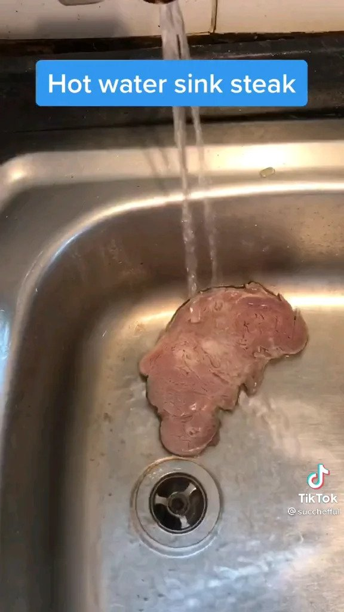

Sink Steak

Steak is considered by many to be a meal difficult to cook without an grill. This would be a hinderance, but no longer! Now anyone
with access to a hot tap can cook their steak right in their own kitchen (or bathroom) with this mind blowingly simple recipe.
Ingredients
- Steak (preferably a fine cut such as filet mignon)
- Plastic ziploc bag
- Condiments of your choice
Directions
- Cut your steak into small pieces able to fit under the running water of a faucet
- If a more refined taste is desired, put the steak in a ziploc bag. Skip this step if you desire a flavor rich in minerals
- Run the steak under hot water until the outside becomes brown
- Serve with choice condiments and enjoy
Return to Main Page